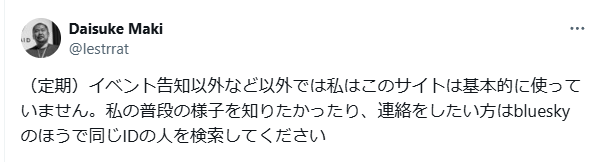
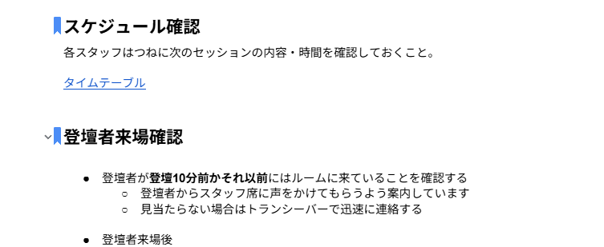
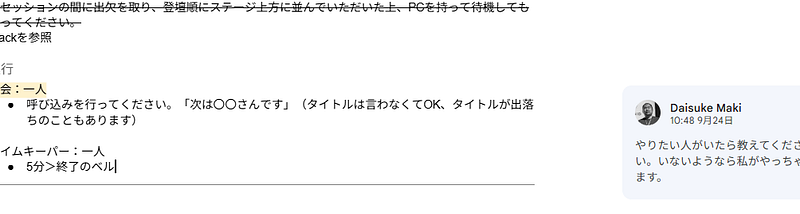
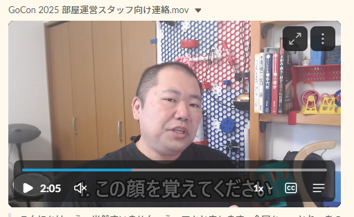
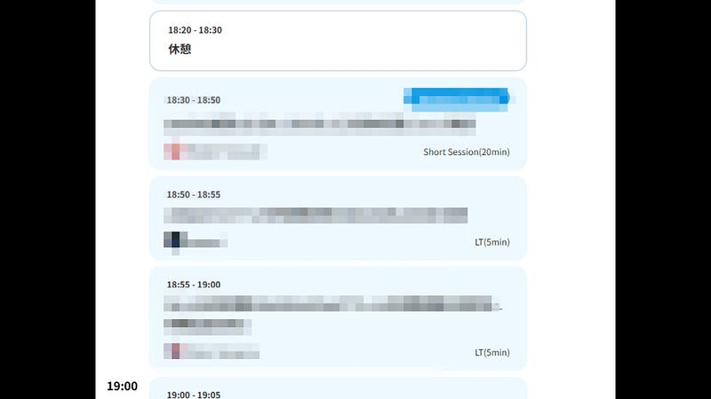

突然Go Conferenceに呼ばれたと思ったら部屋運営リーダーをしていたの巻
突然Go Conferenceに呼ばれたと思ったら部屋運営リーダーをしていたの巻
目次
- 前置き
- 準備編
- イベント中通常運用編
- イベント中LT編
- 年齢とイベントスタッフ
- おまけ：3Dプリンターイベント
いきなりですが、私Twitter（X)は基本的に見ていません。定期的に以下のようなメッセージをポストしてるほかは、不定期にDMとかメンションとかが送られてきていないかを確認するくらいです。

その日特に理由もなくTwitterを確認しにいくと、9月4日に来ていたDMがあるじゃありませんか。その日は9月9日か10日でした。この時点ですでに1週間近く前！
内容を見てみると「9月27日のGo Conference 2025のヘルプをしてくれないか」というものでした。この日このサイトを確認しにいったのは本当に偶然で、下手をすればもう1～2週間はサイトを見てなかったかもしれません。あぶねぇ！
あまりこういうイベントの裏方に詳しくない方にはなんでこのタイミングで私みたいなロートル（※1）を呼び出す必要があるのかと思われるかもしれません。特に細かく聞いたわけではないのでいまだに詳しい事情は知りませんが、多分よくある話です。こういうコミュニティイベントは誰も仕事でやっているわけではないため、色々なことがかさなるとどうしてもバタついてしまうのですね。わかる。
（※1) 10年ほどYAPC::Asia Tokyo (2009~2015)と builderscon (2016~2019) の来場者数1000人とか2000人のイベントを運営していた経験がありますが、それ以降は全然やっていません。
私この時点で1年前に一スタッフとして参加はしていたものの、企画を立てるとかは中心的な役割は負ってないし、今回に関してはスタッフの申し込みをしてなかったので内容すらわかってませんでした（というか、日時すら知らなかった）。
ともあれ「え！？」とは思ったものの、まぁイベント運営の経験だけは長いですし、去年も一スタッフとしてお手伝いさせてもらっていたので、私にできることならいくらでも、快諾しました。
ここまで前置きが長かったですが、この記事は感想とかではなく、それからの記録、という感じで、主に私にとっての公開備忘録です。
同時に、これを読んだなにかしらのイベントスタッフをやる人が「なるほど、これくらいの温度感でもできるのか…」と思ってくれればいいかな、という気持ちもあります。
準備編
そんなわけで開催直前になって、スタッフとして参加することになりました。前述の通りどんな内容なのか細かくはわかっていなかったのですが、ざっくり言うと当日のセッションがつつがなく進行するようにおまかせする、部屋運用リーダーをやってくださいということでした。
なるほど。とにかく部屋の運用を自分の知ってるやり方でとりあえずやればいいのね。ということで、とにかく自分のイベントだったやるであろうことを昨年のマニュアルとも比べたり、実行委員に確認しながら、今年用のマニュアルに落としていきました。


本当は細かい秘伝のタレというか、これまで自分のイベントで失敗して反省した結果から得た知識をここに全部書けばいいのかもしれませんが、本当の秘伝のタレは一般的に考えて「こうやれば成功する」という正論を実際のイベントの実情に合わせて調整するところで、そここそ文章に落とすのが難しいと思います。というわけでとりあえずこの記事ではこれくらいで勘弁してください。
ただ今回は前述の通り最後の最後になっての参加だったのでマニュアルの外＝参加者の期待値やスケジュールと細かくすり合わせをする方法も時間もなかったので、あんまりその本当の意味の秘伝のタレを使える機会は少なかったかな、と思います。
ともかく、とりあえず自分の中ではこうすれば運用自体はうまくいくはず～ということを思いつく限り書き連ねて、実際に運用をするスタッフが迷わず運用をできるようにしたつもりです。
また、これも時間の都合でスタッフと顔合わせをしている時間がなかったので私が最近得意？としている6分動画を作成してSlackに投稿し、おてすきで見てください！とスタッフにお願いしました。

この動画では改めてスタッフの方に絶対頭に入れておいてほしいことを3つに絞って伝えました。1. 私の顔を覚えること 2. マニュアルを読むこと 3. シフトリーダーを決めること。
この三つは、（私の中で）このようなバタついているイベント運用において一番重要なことを実現可能にするための 絶対にはずせない要素でした。
その一番重要なことというのは、現場が基本的に自律的に機能しつつ、問題があったときのエスカレーションパスを確立するということです。
自律的に動いてもらうのにマニュアルの存在が必要なのは改めて言う必要もないと思います。その中に基本の動作を全て書き、それらから外れる場合はエスカレーションする旨を明記します。
リーダーを決めるのは、複数人で仕事をしているときにリーダーが決まっていないと例えばエスカレーションすべきかどうかの判断ができなかったり遅れてしまうからです。複数人いると遠慮みたいな、これは自分の権限なのか？みたいな気持ちが芽生えがちですよね。そういう状態を生まないためのリーダーです。
そして、最終的にどこにエスカレーションするのかというと私ですので、私の顔だけは絶対覚えてもらわないといけない。私のSlackアイコンは素顔なので、わざわざ改めて顔を見せないでもわかるかもしれませんが、数年前の顔と微妙に違うだろうし、とにかくよく見ておけ！と言って損はないですよね。
というわけで事前準備でできたのはここまでです。
気が付いたらイベントが始まってました。
イベント中通常運用編
イベント中の私は基本的に2つの場所以外は動かないようにします。というのも、問題が起こったときに報告する先がないと困るので、リーダーは絶対に所在を明らかにして、そこに居続けるのが仕事だと思っているからです。
さらにいうとイベントのリーダーとしては所在を明らかにして、可能な限り現場仕事は現場にまかせつつ判断が必要な時に迅速に判断をするのが仕事だと思っています。リーダーが現場仕事をすると判断する人がいなくなって逆に作業が滞ったり、最悪エスカレーションできなかったりすると経験上思っているので、私は敢えて現場仕事は可能な限り現場にすべて振ります。
というわけで私は二日間スタッフ控室と、各セッションルームを往復してました。各セッションルームには休憩時間ごとに行って問題がないか確認するのと、セッションの合間にも外から様子を見て入場制限が必要かどうかとか、温度がどうかとかを確認する、みたいなことをしてました。
あとは時折ランダムなタスクをしたり、トランシーバーで様子を伝えたりなどしました。
イベント中LT編
Lightning TalkことLTが二日目の一番最後、7時近くになってあるという事実はイベントの直前くらいにやっとちゃんと認識したので、そこから「どうするんだ、これ」と考え始めました。
いままでずっとLTの司会をやってきた経験からスピーカーが時間を守ってくれる、かつPC接続ができるとかすべての要素がベストシナリオで進むはず！と期待するのは悪手です。問題があったとき、最大LTの数 の分だけタイムロスがあるので、かなりの大問題になります。例えば10本のLTがあって、一人1分ロスしたとしても10分。2分だとしたら最大20分もロスしてしまいます。
そこまでいかなくても私もこれまで5～15分くらいはオーバーしてつらかったこともあるので超ドキドキしてました。
さらに今回このタイムスロットが長時間のイベントのオオトリ、つまりみんながもうそろそろ帰りたいと思っているはずの時間であることを考えると、絶対にオンタイムで進める必要があります。ここでもたもたしてたら最悪の体験になってしまう。
ここまでは通常運用がうまくいくようにすることに集中していたので、オペレーションが回っているのが確信できたギリギリになってからLTの細かい段取りを全て決めて、スタッフに色々指示だしをしました。ちょっと前の画像でもわかるように果たして私が司会するのかもちゃんと決まってなかったので、余計そうです。
というわけで誰も司会をしたいと手を挙げなかったので、Go Conferenceに合うのかは知らないけど、とにかく私流でやることにしました。
するとまず問題なのが、参加者と司会の私の呼吸合わせです。事前に通知できればよかったですが、そんなことをしてる時間は当然ないわけで、どこかで勢いで参加者を巻き込んでいくしかありません。
ですがここで大ボスが！

LTの前に！！！！説明をする休憩時間がない！！！！！18:30からLTだと思ってた…！！！！そうなると18:20–18:30で説明をしておかないといけないということがわかりました。LTが始まってからやるのではLTの時間を食ってしまう…
というわけでしょうがないので私はその一つ前の休憩時間に急遽、LTで何を行うのか説明をしました。直前のスピーカーにはちょっと申し訳ないな、と思いつつ、ここしかなかったんです…
LTの司会をしつつ、まぁおおむねうまく進行できたとは思うので、一応満足するできでした。ですが、正直やりながら「はたして俺の今やってるこれはこのコミュニティのテイストにあってるのか？」とか「昔の芸人が若い世代に寒い芸を見せてる感じなってないか？」などと自問自答はしてました。なのでその後Twitterで色々まわりに聞きまくってしまいました。正直まだ気にしてます。ただ、まぁ与えられた環境でできるベストはやったと思います。
この後片づけなどを経て、イベントは終了。お疲れ様でした。
年齢とイベントスタッフ
去年こそGo Conferenceのスタッフをしていましたが、リーダー的な役割でスタッフをやるのは2019年ぶり、6年ぶりです。LTの司会も同じです。
あの時はまだアラフォーだった私も今や立派なアラフィフです。そんなわけで今回はもう年齢にあった準備をしないといけない、と心に決めて色々準備しました。
まずはホテル。比較的近くに住んではいるのですが、1日目のスタッフ業を済ませてから帰宅してまた朝早くくるとか無理。運営がホテル代を経費にしてくれようがなかろうが自分の体力を考えると、1日目のスタッフ業を終えて30分くらいですぐ寝ないと翌日使い物にならないことがわかっていたので、参加することが決まってすぐ、会場から徒歩5分の場所にホテルを取りました。
次に湿布の用意。ジジ臭いですが、ここで見栄を張っても仕方がありません。体が痛くなるならそれに対する準備をしておかないと仕事にならない。なので箱一個丸ごと持っていきました。案の定たっぷり使いました。
あとはLTの説明をしているときに会場の皆様に言いましたが、年齢的に必需品となったのは滋養強壮剤です。1日目は乗り切れるとはわかっていましたが、2日目はヤバいと分かった瞬間に運営に滋養強壮剤をおねだりしました。
実際、休憩時間にLTの説明をしに行ったときは本当にもうつらくてふらふらしていたのですが、さすがに高級滋養強壮剤… ものの10分くらいで目がギンギンになってきました。すごい。けど絶対にこれ体に悪いと思います。ピンポイントで使えるとは思いますが、これは絶対常用してはいけないやつですね…
というわけで私の2回目のGo Conferenceスタッフでした。LT司会は楽しかったので、あの芸風が求められるならまたどこかにお呼ばれしたいなぁ、とは思いましたね。是非 Twitterではなく私のblueskyアカウントに連絡してください :D
あと、最後に宣伝ですが、今3Dプリンター初心者～中級者をターゲットにしたイベントを企画中です。
超ビッグなゲスト（すでに決定していますが、会場・日時が決まってからお知らせします）を呼ぶとともに、私からは3Dモデリングの基礎みたいな話を少しさせてもらおうと思います。あとは何人か公募でスピーカーがほしいなーと思っていますが、詳細は10月中くらいに公開できると思います。是非私のblueskyアカウントかTwitterアカウントをフォローしてください！